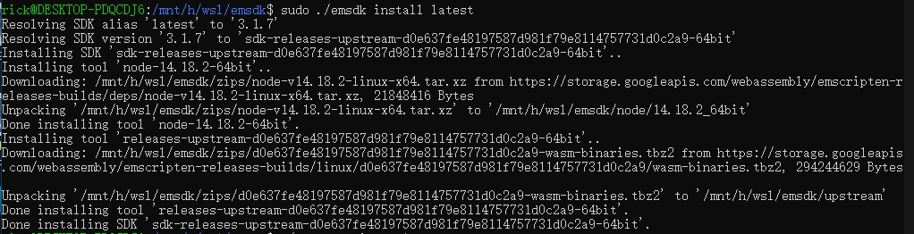
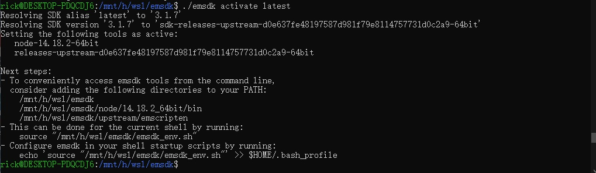
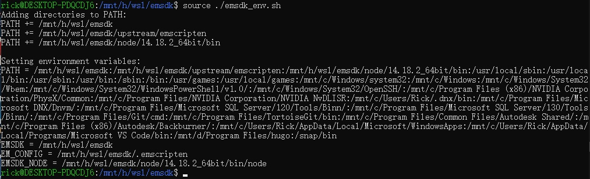
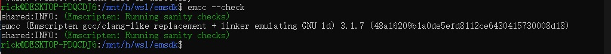
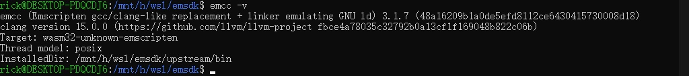

启用 Linux 环境
这里使用的是 WSL（Windows Subsystem Linux）环境，环境配置参考这里
Linux 安装 Emscripten
-
安装 python3
sudo apt install python3 -
安装 git
sudo apt install git -
创建目录并 clone emsdk
sudo git clone https://github.com/emscripten-core/emsdk.git -
更新 emsdk 并激活
cd emsdk git pull # Download and install the latest SDK tools. ./emsdk install latest # Make the "latest" SDK "active" for the current user. (writes .emscripten file) ./emsdk activate latest # Activate PATH and other environment variables in the current terminal source ./emsdk_env.sh


- 注：如果更改了 SDK 的位置（例如，拷贝到另一台计算机上），重新运行
./emsdk activate latest和source ./emsdk_env.sh命令 - 注：可以把所需的路径添加到
PATH中，否则终端重启后要先运行source ./emsdk_env.sh命令
- 注：如果更改了 SDK 的位置（例如，拷贝到另一台计算机上），重新运行
-
测试环境
Windows:emcc --check
Linux:./emcc --check
emcc -v
-
如果使用 CMake 编译，还需要安装 CMake
sudu apt install cmake